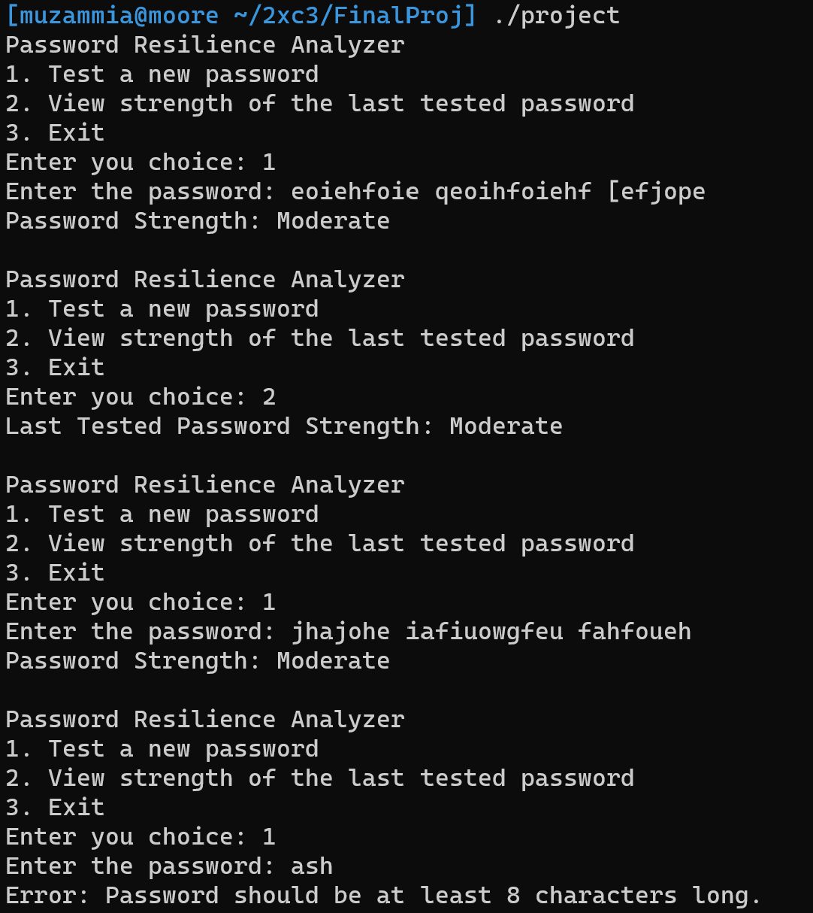

Project Details
 This project is a password strength analyzer written in C. It evaluates a password based on various criteria such as the presence of lowercase letters, uppercase letters, digits, special characters, and length. Based on the evaluation, the password is classified as weak, moderate, or strong.Introduction
How the Password Strength Checker Works
The password strength checker evaluates a password by checking for specific characteristics. It uses a point-based system, and the overall strength of the password is determined based on the total points. Here's the breakdown of how the system works:
- Lowercase Letters: Checks if the password contains at least one lowercase letter.
- Uppercase Letters: Checks if the password contains at least one uppercase letter.
- Digits: Checks if the password includes at least one numerical digit.
- Special Characters: Checks for the presence of non-alphanumeric characters (e.g., @, #, $, etc.).
- Password Length: If the password is longer than 12 characters, an additional point is awarded.
The password is evaluated on the basis of the criteria above, with a maximum possible score of 5 points. The password strength is then categorized as follows:
- Weak: 0-2 points
- Moderate: 3-4 points
- Strong: 5 points
User Interaction Options
The password checker allows the user to perform the following actions:
- Test a New Password: The user can input a password, and the program will analyze its strength based on the criteria mentioned earlier. If the password is less than 8 characters, an error message is displayed, and the password will not be evaluated.
- View Strength of Last Tested Password: The user can view the strength of the last password they tested. This allows users to check the previous password's evaluation without re-entering it.
- Exit: The user can exit the program at any time by choosing this option.
Program Workflow
The program operates in a loop, allowing the user to continuously test new passwords or check the strength of the last tested password. Here is a step-by-step breakdown of the process:
- The user is presented with a menu offering three choices: Test a new password, view the strength of the last tested password, or exit the program.
- If the user selects to test a new password, they are prompted to enter the password. The program then analyzes the password based on the defined criteria (lowercase, uppercase, digits, special characters, and length) and provides feedback on whether the password is weak, moderate, or strong.
- If the user chooses to view the strength of the last tested password, the program re-evaluates the stored password and displays its strength.
- If the user selects to exit, the program stops execution and terminates.
Key Features
- Flexible Evaluation: The program evaluates passwords based on several key factors, giving users insights into how secure their passwords are.
- Feedback on Password Strength: Provides immediate feedback on the password strength, categorizing it as weak, moderate, or strong.
- Looped Execution: Allows users to continuously evaluate new passwords or check the last one without restarting the program.
- Length Check: Ensures that passwords are at least 8 characters long to be considered valid for evaluation.